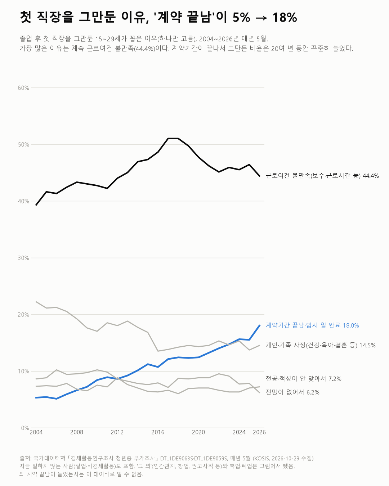
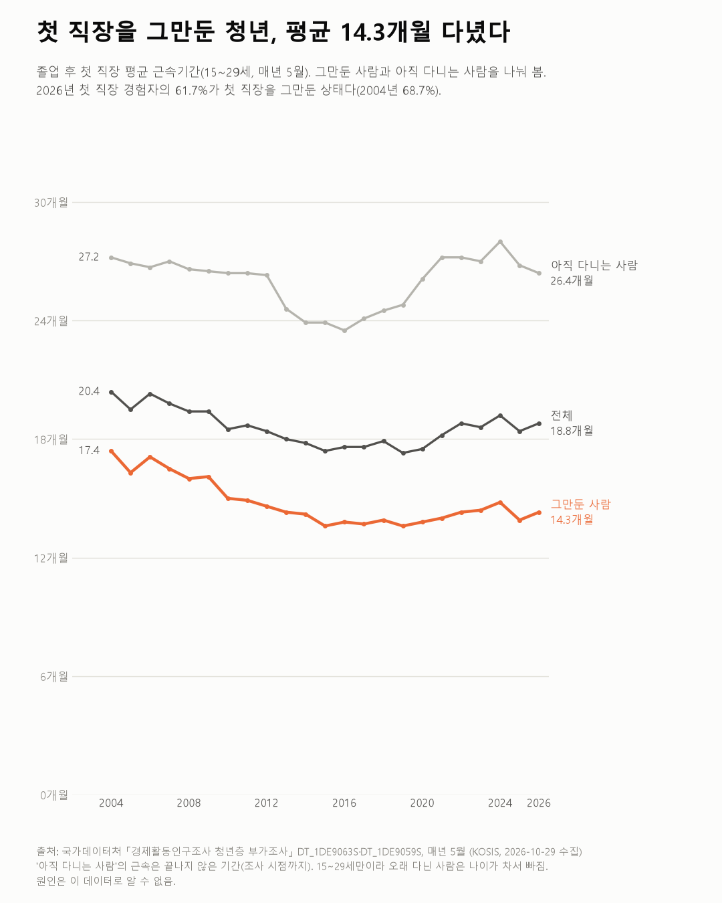

청년층 부가조사
첫 직장을 그만둔 이유, '계약 끝남'이 5% → 18%
청년층 부가조사 2004~2026

질문
청년(15~29세)은 졸업 후 첫 직장을 얼마나 다니고, 그만둔다면 왜 그만두나? 20여 년(2004~2026) 사이 바뀌었나?
사용 데이터와 출처
| 데이터 | 출처 | 쓰임 |
|---|---|---|
| 성별 첫일자리를 그만둔 사유 (KOSIS DT_1DE9063S) | 국가데이터처 「경제활동인구조사 청년층 부가조사」 | 첫 직장을 그만둔 이유별 인원 → 비율 |
| 첫직장 근속기간 (KOSIS DT_1DE9059S) | 같은 조사 | 그만둔 사람·아직 다니는 사람의 평균 근속기간, 그만둔 사람 비율 |
- 매년 5월에 조사한다. 졸업(중퇴) 후 일해 본 15~29세가 대상이다.
- 그만둔 이유는 하나만 고르는 문항이다. 이유별 인원을 더하면 이직 경험자 전체와 같다(모든 연도 확인).
- 그만둔 이유 표의 이직 경험자 수와 근속기간 표의 '그만둔 경우' 인원이 같은지도 확인했다.
- 교차 확인: 2026년 첫 직장 평균 근속기간 18.8개월(1년 6.8개월), 근로여건 불만족 44.4%는 2026년 7월 보도 수치와 같다.
- 수집일: 2026-10-29 (KOSIS 오픈API).
인사이트
1. 첫 직장을 그만둔 가장 큰 이유는 20여 년 내내 근로여건 불만족(보수·근로시간 등)이다. 2026년 44.4%다. 2017·2018년 51.0%가 가장 높았고, 그 뒤 조금 낮아졌다.
2. '계약기간이 끝나서(임시·계절 일 포함)'가 2004년 5.3%에서 2026년 18.0%로 늘었다. 2010년대부터 거의 해마다 늘었고, 2023년부터는 개인·가족 사정을 넘어 두 번째 이유다(2026년 18.0% vs 14.5%).
3. 개인·가족 사정(건강·육아·결혼 등)은 22.2%에서 14.5%로 줄었다. 전망이 없어서(6.2%), 전공·적성이 안 맞아서(7.2%)는 20년 동안 비슷한 수준이다.
4. 첫 직장을 그만둔 청년은 평균 14.3개월 다녔다. 2004년 17.4개월에서 2015년 13.6개월까지 줄었다가 그 뒤 14개월 안팎이다. 2026년 5월 첫 직장 경험자의 61.7%가 첫 직장을 그만둔 상태다(2004년 68.7%).

한계
이 데이터로 말할 수 없는 것
- 매년 다른 사람들이다. 같은 사람을 따라간 것이 아니라 그해 5월의 15~29세 단면이다.
- 15~29세로 끊었다. 오래 다닌 사람은 30세가 되면 빠진다. 졸업이 늦어지면 근속기간이 짧게 나올 수 있다. 20~34세 기준 표도 있지만 이 글은 15~29세만 썼다.
- '계약 끝남'이 늘어난 이유는 알 수 없다. 기간제 일자리가 늘었는지, 응답 방식이 바뀌었는지 이 데이터로는 가를 수 없다.
- 근로여건 불만족은 보수와 근로시간 등이 한 항목이다. 둘 중 무엇인지는 나뉘지 않는다.
- '그 외'에 여러 이유가 묶여 있다. 회사 내 인간관계, 창업·가족사업, 권고사직 등이다(2026년 6.6%).
- 지금 일하지 않는 사람도 포함된다. 첫 직장을 그만두고 다른 직장으로 옮긴 사람과 쉬는 사람을 나누지 않았다.
전제 기록
데이터를 보기 전에 적어둔 것, 그리고 보고 나서 바꾼 것
- 전제 기록(premises)(데이터를 받기 전에 작성)를 따랐다. 전제 3(하나만 고르는 문항인지)은 사유 합 = 전체로 확인했다.
- 받은 뒤 바뀐 점: 이 표는 기간 구분이 월(M)이다(매년 5월만 있음). 처음 계획한 2006년 대신 데이터가 있는 2004년을 시작점으로 썼다.